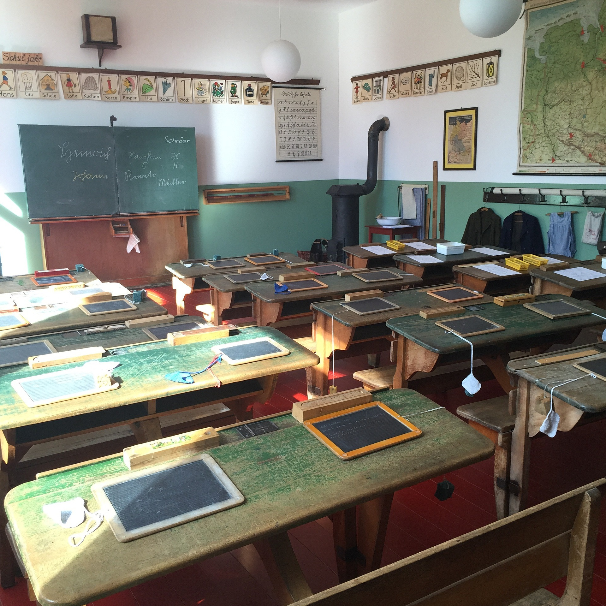

宝马小学坐落在长白山北麓、二道白河镇红丰村，被茫茫林海环抱。这里的孩子们生于长白山间，眼里藏着山林与星空，却受地域条件限制，课外读物、科普教具、兴趣课程资源相对有限。很多孩子对山外的世界充满好奇，却缺少拓展视野的机会。
相隔数千公里，麓光队希望搭建起一座跨越山海的桥梁：把南方少年的善意送到长白山脚下，陪伴山里的孩子探索知识、看见更广阔的世界。
我们是麓光队，来自广东碧桂园国际学校。本次公益助学项目，帮扶的学校是吉林省长白山保护开发区池北区二道白河镇红丰村宝马小学。